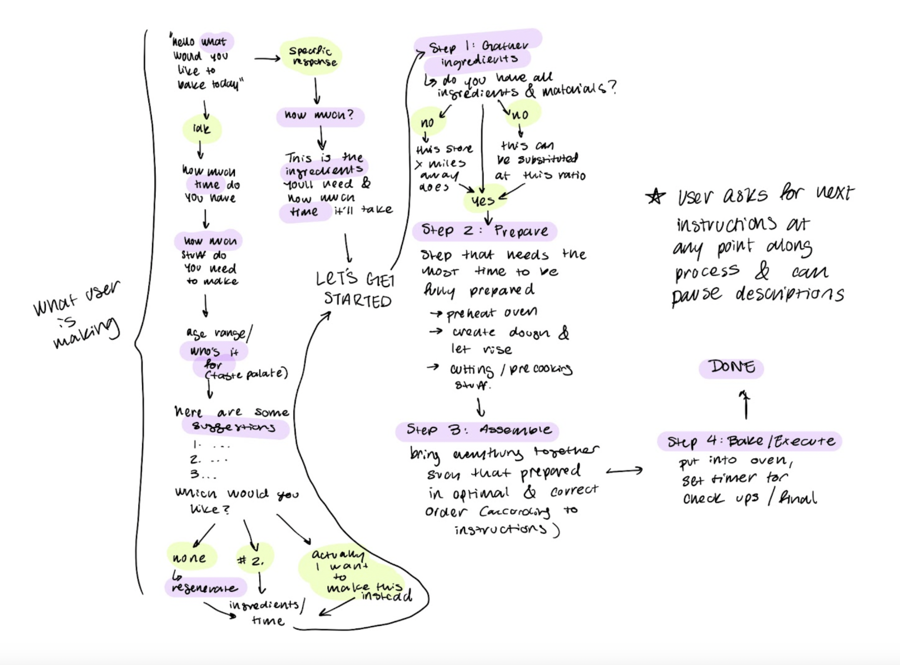
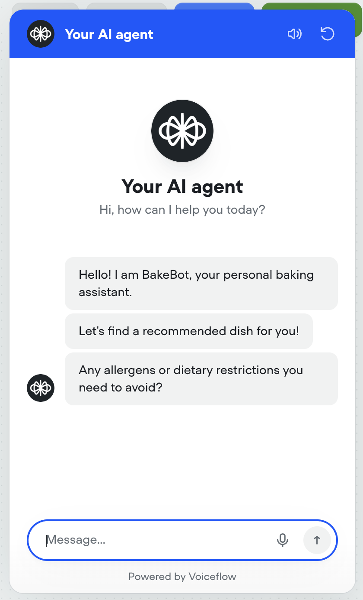
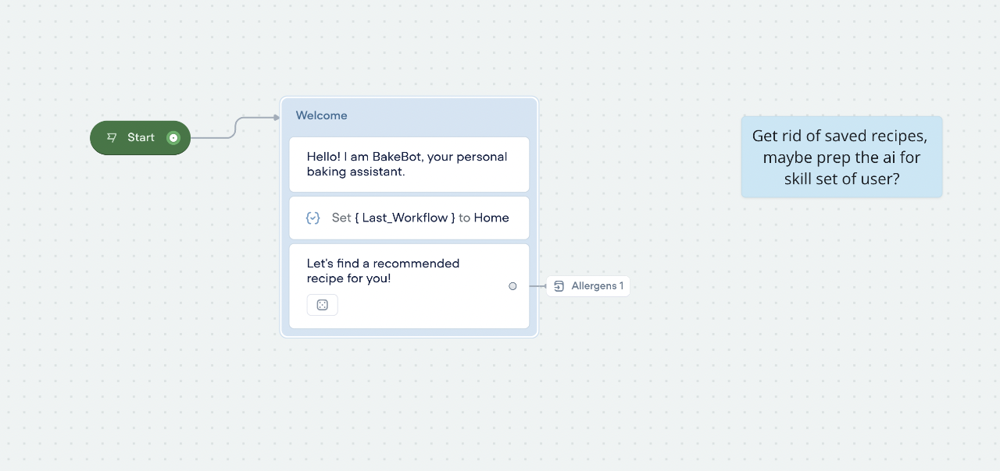
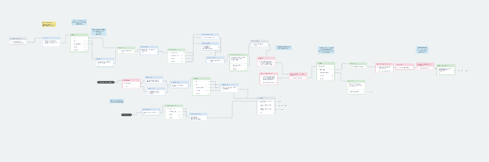
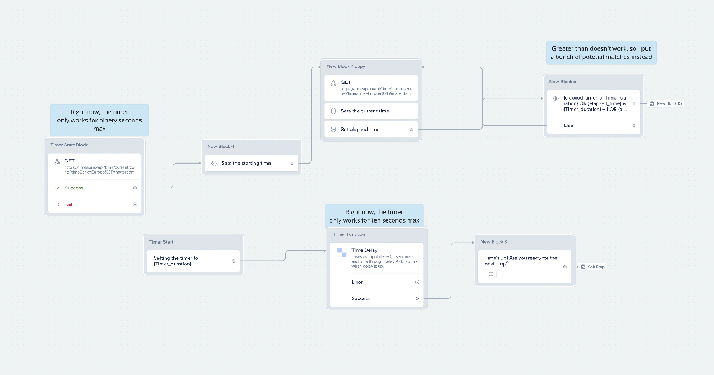

Overview & Problem
Baking is messy and time-sensitive. Switching between wet hands and a phone or laptop causes missed steps, misread amounts, and poorly timed actions. BakeBot is a hands-free, voice-first assistant that reads and clarifies steps, manages multiple timers, and handles common conversions and substitutions.

Goals
- Hands-free guidance: step navigation (“next/previous/repeat/define”), pace control.
- Built-in helpers: conversions, scaling, substitutions, temperature cues.
- Parallel timers: named timers (e.g., “rest”, “bake”) with quick status checks.
- Concise dialogs: short, actionable responses with confirmations on critical values.
Interaction Model
Intents
- Navigating steps; summarize current step; request definitions.
- Set/modify/cancel named timers; check timer status.
- Convert/scale quantities; suggest substitutions with trade-offs.
Slots
- ingredient, quantity, unit, temperature, duration, tool, step index.
Dialog Policies
- Confirm on critical values and when ASR confidence is low.
- Prompt for missing slots; keep replies brief with next actions.

Voice Flow
1) Home

2) Recipe Recommendation

3) Recipe Implementation

Usability Testing
Round 1
- Responses too verbose; users wanted shorter prompts and explicit next actions.
- Confusion when slots missing—needed more resilient recovery prompts.
Round 2
- Standardized units/rounding for clarity.
- Added named timers and quick status queries (“how long on rest?”).
Iterations
- Trimmed response length; added “You can say…” suggestions after each critical step.
- Introduced named timers and summary status responses.
- Clarified conversion/scale outputs with exact amounts and rounding notes.
- Hardened recovery for low-confidence ASR with confirm/re-prompt patterns.
Risky Interactions & Mitigations
- ASR in noisy kitchens: keep utterances short; confirm critical values; easy corrections (“actually one and a half cups”).
- Parallel tasks: named timers + distinct alerts; quick summary on request.
- Substitutions: provide best option plus trade-offs; avoid long choice lists.
Deliverable
Built in Voiceflow with multi-intent dialog, slot elicitation, confirmations, and timers.
Demo Video
Future Work
- Recipe import and step parsing; richer substitution knowledge.
- Personalization (skill level, preferred units, dietary constraints).
- Optional IoT integrations (read-only timers first; controls later).